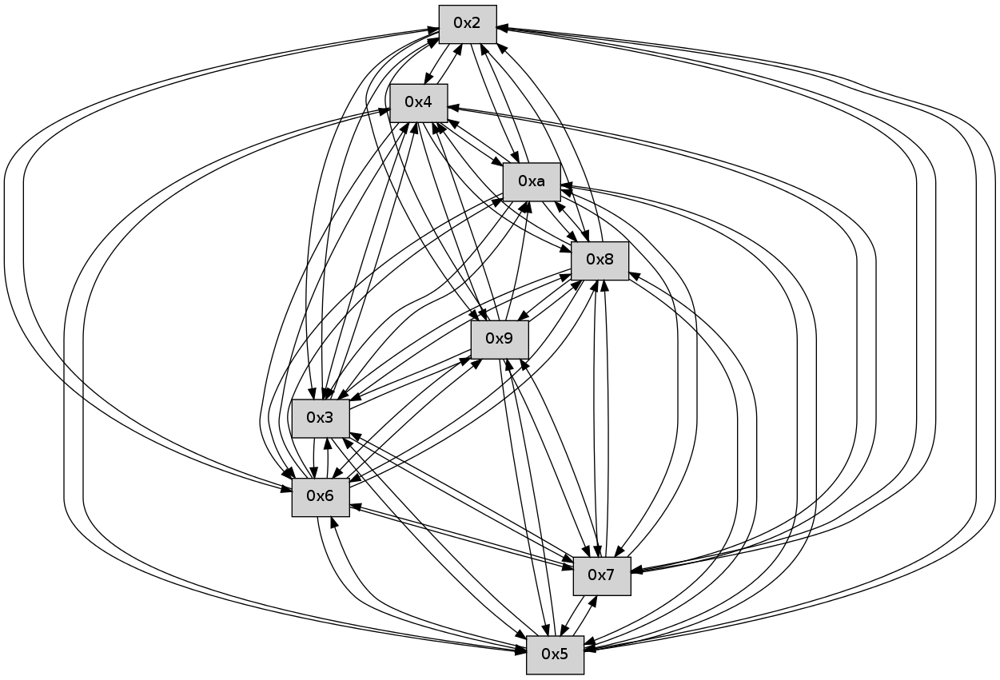

>> << IDX [start] -100 -25 -5 +0 +5 +25 +100 [125.002835989]
 Previous packets
----------------------------------------------------------------------
120.224068 beacon01(faad) #0 coord=01,02,03,04,05,06,07,0a,09,08 cycle=688.0ms assoc
-- color-indic=0 64 c7 b4
120.234049 beacon02(faad) #0 coord=01,02,03,04,05,06,07,0a,09,08 cycle=688.0ms assoc 64 54 85
120.244051 beacon03(faad) #0 coord=01,02,03,04,05,06,07,0a,09,08 cycle=688.0ms assoc 64 2e c8
120.254051 beacon04(faad) #0 coord=01,02,03,04,05,06,07,0a,09,08 cycle=688.0ms assoc 64 59 22
120.264051 beacon05(faad) #0 coord=01,02,03,04,05,06,07,0a,09,08 cycle=688.0ms assoc 64 23 6f
120.274050 beacon06(faad) #0 coord=01,02,03,04,05,06,07,0a,09,08 cycle=688.0ms assoc 64 ad b8
120.284052 beacon07(faad) #0 coord=01,02,03,04,05,06,07,0a,09,08 cycle=688.0ms assoc 64 d7 f5
120.294055 beacon0a(faad) #0 coord=01,02,03,04,05,06,07,0a,09,08 cycle=688.0ms assoc 64 a6 fe
120.304056 beacon09(faad) #0 coord=01,02,03,04,05,06,07,0a,09,08 cycle=688.0ms assoc 64 28 29
120.314055 beacon08(faad) #0 coord=01,02,03,04,05,06,07,0a,09,08 cycle=688.0ms assoc 64 52 64
120.325829 [Hello(7): seq=82 sym=2,3,5,6,4,8,9,10 sysInfo= stat=2:14,0,0,0/3:8,0,0,0/5:7,0,0,0/6:15,0,0,0/4:8,0,0,0/8:14,0,0,0/9:15,0,0,0/10:10,0,0,0]
120.330596 [Hello(6): seq=82 sym=2,3,5,4,7,9,8,10 sysInfo= stat=2:7,0,0,0/3:9,0,0,0/5:7,0,0,0/4:8,0,0,0/7:9,0,0,0/9:14,0,0,0/8:13,0,0,0/10:10,0,0,0]
----------------------------------------------------------------------
121.012199 beacon01(faad) #0 coord=01,02,03,04,05,06,07,0a,09,08 cycle=688.0ms assoc
-- color-indic=0 64 7b b1
121.022182 beacon02(faad) #0 coord=01,02,03,04,05,06,07,0a,09,08 cycle=688.0ms assoc 64 e8 80
121.032182 beacon03(faad) #0 coord=01,02,03,04,05,06,07,0a,09,08 cycle=688.0ms assoc 64 92 cd
121.042182 beacon04(faad) #0 coord=01,02,03,04,05,06,07,0a,09,08 cycle=688.0ms assoc 64 e5 27
121.052183 beacon05(faad) #0 coord=01,02,03,04,05,06,07,0a,09,08 cycle=688.0ms assoc 64 9f 6a
121.062182 beacon06(faad) #0 coord=01,02,03,04,05,06,07,0a,09,08 cycle=688.0ms assoc 64 11 bd
121.072182 beacon07(faad) #0 coord=01,02,03,04,05,06,07,0a,09,08 cycle=688.0ms assoc 64 6b f0
121.082187 beacon0a(faad) #0 coord=01,02,03,04,05,06,07,0a,09,08 cycle=688.0ms assoc 64 1a fb
121.092187 beacon09(faad) #0 coord=01,02,03,04,05,06,07,0a,09,08 cycle=688.0ms assoc 64 94 2c
121.102188 beacon08(faad) #0 coord=01,02,03,04,05,06,07,0a,09,08 cycle=688.0ms assoc 64 ee 61
121.117590 [Hello(5): seq=83 sym=7,6,4,2,3,9,8,10 sysInfo= stat=7:13,0,0,0/6:11,0,0,0/4:14,0,0,0/2:10,0,0,0/3:10,0,0,0/9:3,0,0,0/8:3,0,0,0/10:9,0,0,0]
121.121592 [Hello(9): seq=25 sym=5,2,3,4,7,6,8,10 sysInfo= stat=5:4,0,0,0/2:3,0,0,0/3:0,0,0,0/4:5,0,0,0/7:13,0,0,0/6:14,0,0,0/8:12,0,0,0/10:6,0,0,0]
121.127780 [Hello(10): seq=14 sym=6,3,2,5,9,8,7,4 sysInfo= stat=6:10,0,0,0/3:11,0,0,0/2:9,0,0,0/5:9,0,0,0/9:6,0,0,0/8:6,0,0,0/7:8,0,0,0/4:8,0,0,0]
121.134017 [Hello(2): seq=83 sym=4,5,7,6,3,9,8,10 sysInfo= stat=4:6,0,0,0/5:10,0,0,0/7:2,0,0,0/6:10,0,0,0/3:5,0,0,0/9:1,0,0,0/8:2,0,0,0/10:7,0,0,0]
----------------------------------------------------------------------
121.800331 beacon01(faad) #0 coord=01,02,03,04,05,06,07,0a,09,08 cycle=688.0ms assoc
-- color-indic=0 64 4f a9
121.810312 beacon02(faad) #0 coord=01,02,03,04,05,06,07,0a,09,08 cycle=688.0ms assoc 64 dc 98
121.820314 beacon03(faad) #0 coord=01,02,03,04,05,06,07,0a,09,08 cycle=688.0ms assoc 64 a6 d5
121.830314 beacon04(faad) #0 coord=01,02,03,04,05,06,07,0a,09,08 cycle=688.0ms assoc 64 d1 3f
121.840315 beacon05(faad) #0 coord=01,02,03,04,05,06,07,0a,09,08 cycle=688.0ms assoc 64 ab 72
121.850313 beacon06(faad) #0 coord=01,02,03,04,05,06,07,0a,09,08 cycle=688.0ms assoc 64 25 a5
121.860314 beacon07(faad) #0 coord=01,02,03,04,05,06,07,0a,09,08 cycle=688.0ms assoc 64 5f e8
121.870318 beacon0a(faad) #0 coord=01,02,03,04,05,06,07,0a,09,08 cycle=688.0ms assoc 64 2e e3
121.880321 beacon09(faad) #0 coord=01,02,03,04,05,06,07,0a,09,08 cycle=688.0ms assoc 64 a0 34
121.890320 beacon08(faad) #0 coord=01,02,03,04,05,06,07,0a,09,08 cycle=688.0ms assoc 64 da 79
121.902385 [Hello(6): seq=83 sym=2,3,5,4,7,9,8,10 sysInfo= stat=2:8,0,0,0/3:9,0,0,0/5:8,0,0,0/4:8,0,0,0/7:9,0,0,0/9:15,0,0,0/8:14,0,0,0/10:11,0,0,0]
121.905549 [Hello(7): seq=83 sym=2,3,5,6,4,8,9,10 sysInfo= stat=2:15,0,0,0/3:9,0,0,0/5:8,0,0,0/6:0,0,0,0/4:8,0,0,0/8:14,0,0,0/9:0,0,0,0/10:11,0,0,0]
----------------------------------------------------------------------
122.588461 beacon01(faad) #0 coord=01,02,03,04,05,06,07,0a,09,08 cycle=688.0ms assoc
-- color-indic=0 64 f3 ac
122.598443 beacon02(faad) #0 coord=01,02,03,04,05,06,07,0a,09,08 cycle=688.0ms assoc 64 60 9d
122.608445 beacon03(faad) #0 coord=01,02,03,04,05,06,07,0a,09,08 cycle=688.0ms assoc 64 1a d0
122.618445 beacon04(faad) #0 coord=01,02,03,04,05,06,07,0a,09,08 cycle=688.0ms assoc 64 6d 3a
122.628444 beacon05(faad) #0 coord=01,02,03,04,05,06,07,0a,09,08 cycle=688.0ms assoc 64 17 77
122.638445 beacon06(faad) #0 coord=01,02,03,04,05,06,07,0a,09,08 cycle=688.0ms assoc 64 99 a0
122.648445 beacon07(faad) #0 coord=01,02,03,04,05,06,07,0a,09,08 cycle=688.0ms assoc 64 e3 ed
122.658449 beacon0a(faad) #0 coord=01,02,03,04,05,06,07,0a,09,08 cycle=688.0ms assoc 64 92 e6
122.668448 beacon09(faad) #0 coord=01,02,03,04,05,06,07,0a,09,08 cycle=688.0ms assoc 64 1c 31
122.678449 beacon08(faad) #0 coord=01,02,03,04,05,06,07,0a,09,08 cycle=688.0ms assoc 64 66 7c
122.690227 [Hello(2): seq=84 sym=4,5,7,6,3,9,8,10 sysInfo= stat=4:6,0,0,0/5:10,0,0,0/7:3,0,0,0/6:11,0,0,0/3:5,0,0,0/9:1,0,0,0/8:2,0,0,0/10:7,0,0,0]
122.692596 [Hello(5): seq=84 sym=7,6,4,2,3,9,8,10 sysInfo= stat=7:14,0,0,0/6:12,0,0,0/4:14,0,0,0/2:11,0,0,0/3:10,0,0,0/9:4,0,0,0/8:3,0,0,0/10:10,0,0,0]
122.695619 [Hello(4): seq=84 sym=5,7,6,2,3,9,8,10 sysInfo= stat=5:2,0,0,0/7:9,0,0,0/6:3,0,0,0/2:0,0,0,0/3:1,0,0,0/9:4,0,0,0/8:1,0,0,0/10:8,0,0,0]
122.699749 [Hello(8): seq=26 sym=5,2,3,4,7,6,9,10 sysInfo= stat=5:2,0,0,0/2:4,0,0,0/3:3,0,0,0/4:3,0,0,0/7:0,0,0,0/6:2,0,0,0/9:10,0,0,0/10:6,0,0,0]
122.705210 [Hello(10): seq=15 sym=6,3,2,5,9,8,7,4 sym= sysInfo= stat=]
122.708218 [Hello(3): seq=84 sym=5,7,6,4,2,8,9,10 sysInfo= stat=5:15,0,0,0/7:10,0,0,0/6:0,0,0,0/4:1,0,0,0/2:3,0,0,0/8:3,0,0,0/9:1,0,0,0/10:9,0,0,0]
----------------------------------------------------------------------
123.376592 beacon01(faad) #0 coord=01,02,03,04,05,06,07,0a,09,08 cycle=688.0ms assoc
-- color-indic=0 64 37 a2
123.396574 beacon03(faad) #0 coord=01,02,03,04,05,06,07,0a,09,08 cycle=688.0ms assoc 64 de de
123.446579 beacon0a(faad) #0 coord=01,02,03,04,05,06,07,0a,09,08 cycle=688.0ms assoc 64 56 e8
123.477436 [Hello(6): seq=84 sym=2,3,5,4,7,9,8,10 sysInfo= stat=2:9,0,0,0/3:10,0,0,0/5:9,0,0,0/4:9,0,0,0/7:10,0,0,0/9:15,0,0,0/8:15,0,0,0/10:12,0,0,0]
123.481104 [Hello(7): seq=84 sym=2,3,5,6,4,8,9,10 sysInfo= stat=2:0,0,0,0/3:10,0,0,0/5:9,0,0,0/6:0,0,0,0/4:9,0,0,0/8:15,0,0,0/9:0,0,0,0/10:12,0,0,0]
----------------------------------------------------------------------
124.164722 beacon01(faad) #0 coord=01,02,03,04,05,06,07,0a,09,08 cycle=688.0ms assoc
-- color-indic=0 64 8b a7
124.174705 beacon02(faad) #0 coord=01,02,03,04,05,06,07,0a,09,08 cycle=688.0ms assoc 64 18 96
124.184704 beacon03(faad) #0 coord=01,02,03,04,05,06,07,0a,09,08 cycle=688.0ms assoc 64 62 db
124.194705 beacon04(faad) #0 coord=01,02,03,04,05,06,07,0a,09,08 cycle=688.0ms assoc 64 15 31
124.204707 beacon05(faad) #0 coord=01,02,03,04,05,06,07,0a,09,08 cycle=688.0ms assoc 64 6f 7c
124.214705 beacon06(faad) #0 coord=01,02,03,04,05,06,07,0a,09,08 cycle=688.0ms assoc 64 e1 ab
124.224707 beacon07(faad) #0 coord=01,02,03,04,05,06,07,0a,09,08 cycle=688.0ms assoc 64 9b e6
124.234712 beacon0a(faad) #0 coord=01,02,03,04,05,06,07,0a,09,08 cycle=688.0ms assoc 64 ea ed
124.244711 beacon09(faad) #0 coord=01,02,03,04,05,06,07,0a,09,08 cycle=688.0ms assoc 64 64 3a
124.254712 beacon08(faad) #0 coord=01,02,03,04,05,06,07,0a,09,08 cycle=688.0ms assoc 64 1e 77
124.269498 [Hello(10): seq=16 sym=6,3,2,5,8,7,4 sysInfo= stat=6:12,0,0,0/3:12,0,0,0/2:10,0,0,0/5:9,0,0,0/8:6,0,0,0/7:10,0,0,0/4:8,0,0,0]
124.272375 [Hello(5): seq=85 sym=7,6,4,2,3,9,8,10 sysInfo= stat=7:15,0,0,0/6:13,0,0,0/4:15,0,0,0/2:11,0,0,0/3:11,0,0,0/9:4,0,0,0/8:4,0,0,0/10:11,0,0,0]
124.276479 [Hello(4): seq=85 sym=5,7,6,2,3,9,8,10 sysInfo= stat=5:2,0,0,0/7:10,0,0,0/6:4,0,0,0/2:0,0,0,0/3:2,0,0,0/9:4,0,0,0/8:2,0,0,0/10:9,0,0,0]
124.281732 [Hello(9): seq=27 sym=5,2,3,4,7,6,8,10 sysInfo= stat=5:5,0,0,0/2:4,0,0,0/3:1,0,0,0/4:6,0,0,0/7:15,0,0,0/6:0,0,0,0/8:13,0,0,0/10:8,0,0,0]
----------------------------------------------------------------------
124.952854 beacon01(faad) #0 coord=01,02,03,04,05,06,07,0a,09,08 cycle=688.0ms assoc
-- color-indic=0 64 9f c9
124.962836 beacon02(faad) #0 coord=01,02,03,04,05,06,07,0a,09,08 cycle=688.0ms assoc 64 0c f8
124.972837 beacon03(faad) #0 coord=01,02,03,04,05,06,07,0a,09,08 cycle=688.0ms assoc 64 76 b5
124.982835 beacon04(faad) #0 coord=01,02,03,04,05,06,07,0a,09,08 cycle=688.0ms assoc 64 01 5f
124.992838 beacon05(faad) #0 coord=01,02,03,04,05,06,07,0a,09,08 cycle=688.0ms assoc 64 7b 12